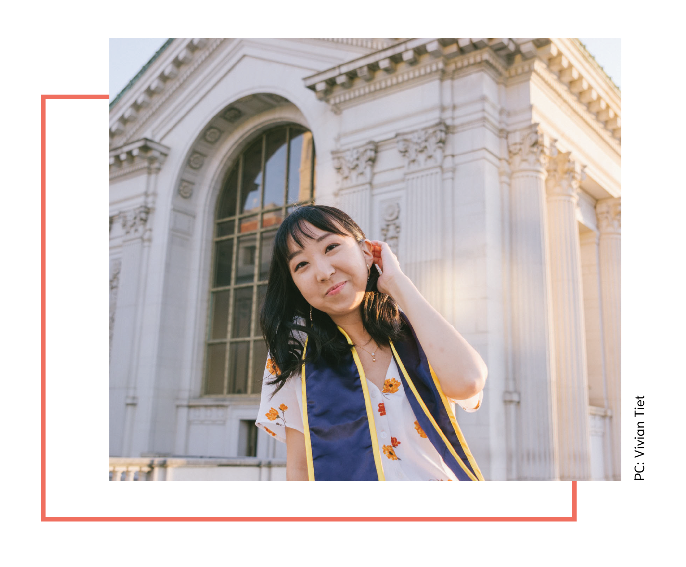
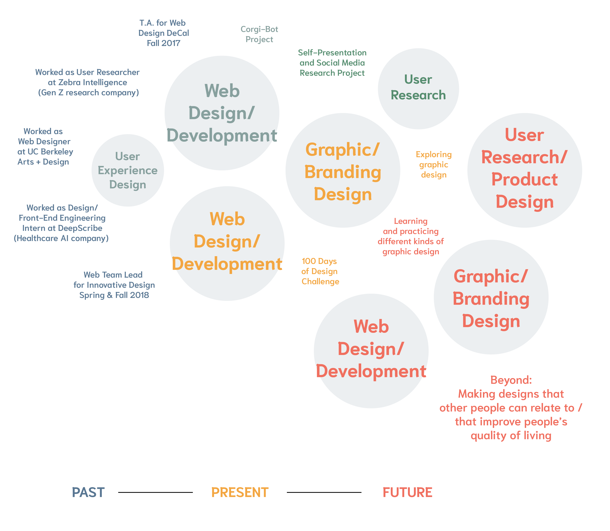
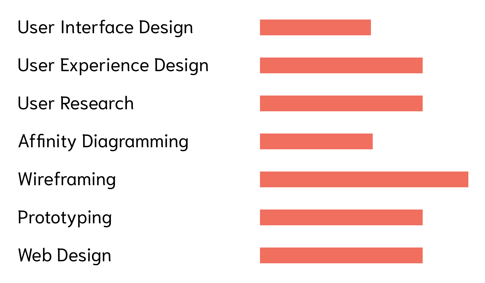
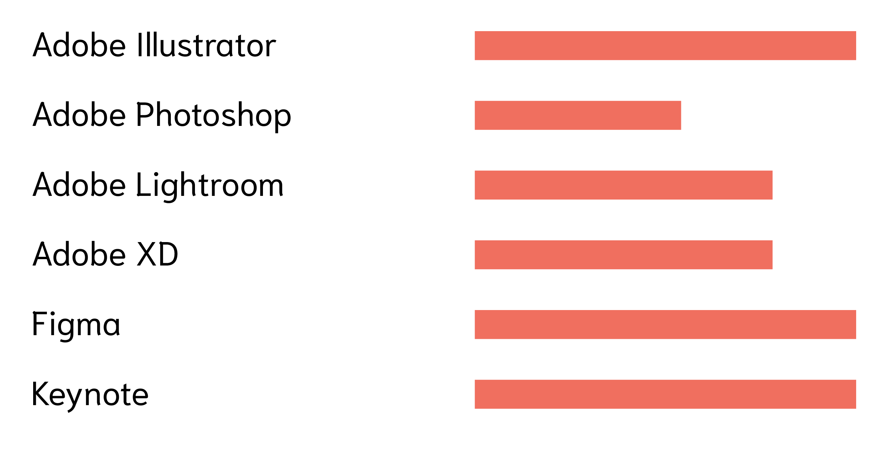
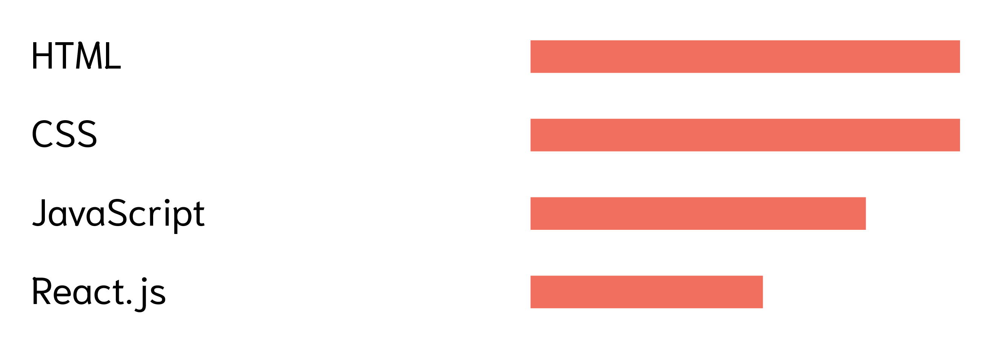

Hi! I'm Sheryl.
I've always been a creative at heart. As a child, I loved to draw and paint, but I wasn't confident artistically. In high school, I kept hearing that making a living as an artist would be very difficult, so I focused more on my classes and left creativity behind.
Then, in college, I was lucky enough to take the Web Design DeCal, which exposed me to the world of design for the first time. I later TA'd for this class, led web design teams in Innovative Design, and took various design classes to build my skillset.
I'm currently working as a Project Coordinator at Genentech. Although I love the company's mission, it has been very difficult for me not to be doing design work there and not to be challenged creatively. To continue to cultivate the design sensibility I developed in college, I have made a few zines and done a bit of freelance graphic design work over the past few months. But I want to make an impact with design full-time, which is why I'm actively looking to move into a design-focused, creatively stimulating role.
In my free time, I've been listening to a podcast about prison called Ear Hustle, learning how to make Chinese green onion pancakes using dumpling wrappers, and writing poetry on Wednesday nights at E.M. Wolfman Bookstore. I love meeting new people, so feel free to reach out! :-)
Spheres of Interest
Here's a diagram that shows what I have done and what I was interested in, what I am doing and what I'm currently interested in, and what I hope to be doing in the future.

Capabilities
DESIGN

PROGRAMS

CODE
